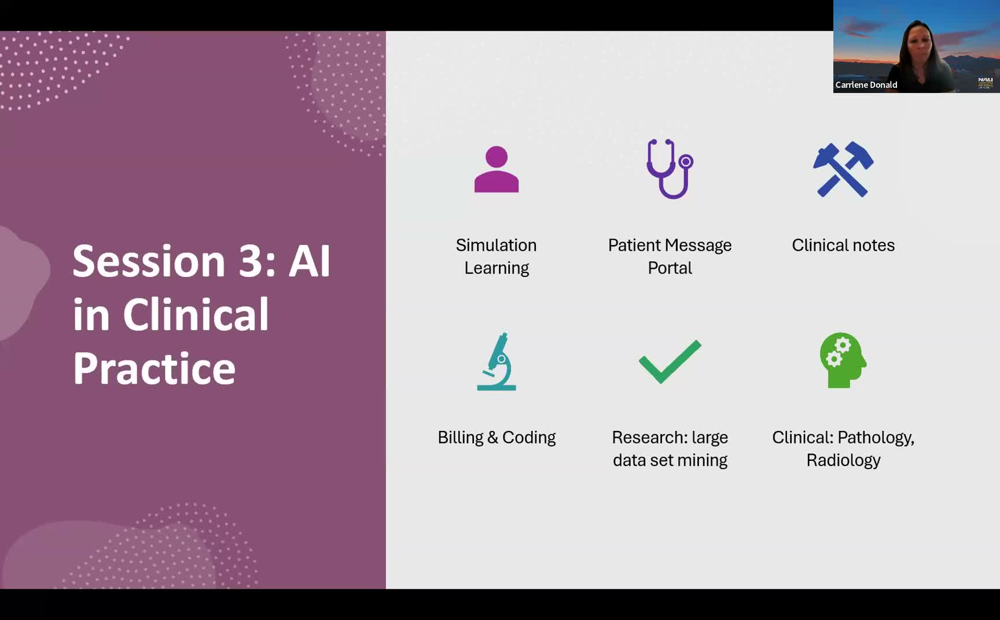

From Classroom to Clinic: AI Literacy for Healthcare Students
A three-part workshop series bridges AI education and clinical practice for health professions students.
Presented by Sarah Bolander, Carrlene Donald, and Zac Baker, Department of PA Studies, NAU Phoenix Bioscience Core
About This Project
Healthcare training programs face a growing challenge: students entering clinical practice encounter AI tools in the wild before they have any formal preparation for using them responsibly or effectively. Sarah Bolander, Carrlene Donald, and Zac Baker designed a voluntary three-session workshop series for students in the physician assistant, physical therapy, occupational therapy, and athletic training programs at NAU's Phoenix Bioscience Core. The series moved from foundational AI literacy (terminology, ethical considerations, hallucinations, prompt engineering) through practical study strategies, and culminated in a session focused specifically on AI use in clinical environments, covering documentation, patient messaging portals, billing and coding, and clinical pathology applications.
Students attended optional lunch-and-learn sessions, giving the team a motivated audience who came by choice. The first session was designed to level-set knowledge across programs so all participants shared a common vocabulary. The second session, led by Zac Baker drawing on his background in learning science, helped students apply AI tools to their own study workflows and design personalized learning plans. The third session drew on Carrlene Donald's clinical experience in ENT and head and neck surgery to show how AI is already reshaping documentation, simulation training, and clinical decision support in real healthcare settings.
Project Highlights

